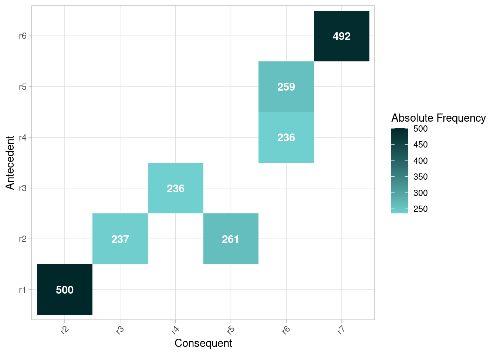

Organisational Analysis
library(bupaR)Resource Frequency
The resource frequency metric allows the computation of the number/frequency of resources at the levels of log, case, activity, resource, and resource-activity.
patients %>%
resource_frequency("resource")## # A tibble: 7 × 3
## employee absolute relative
## <fct> <int> <dbl>
## 1 r1 500 0.184
## 2 r2 500 0.184
## 3 r6 495 0.182
## 4 r7 492 0.181
## 5 r5 261 0.0959
## 6 r3 237 0.0871
## 7 r4 236 0.0867Resource Involvement
Resource involvement refers to the notion of the number of cases in which a resource is involved. It can be computed at levels case, resource, and resource-activity.
patients %>%
resource_involvement(level = "resource") %>% plotIt this example it shows that only r1 and r2 are involved in all cases, r6 and r7 are involved in most of the cases, while the others are only involved in half of the cases, more or less.
Resource Specialization
The resource specalization metric shows whether resources are specialized in certain activities or not. It can be calculated at the levels log, case, resource and activity.
patients %>%
resource_specialisation("resource")## # A tibble: 7 × 3
## employee absolute relative
## <fct> <int> <dbl>
## 1 r1 1 0.143
## 2 r2 1 0.143
## 3 r3 1 0.143
## 4 r4 1 0.143
## 5 r5 1 0.143
## 6 r6 1 0.143
## 7 r7 1 0.143In the simple patients event log, each resource is performing exactly one activity, and is therefore 100% specialized.
Handover-of-work network
A handover-of-work network can be created with the
resource_map function. It has the same arguments as the
process_map function.
patients %>%
resource_map()Resource precedence matrix
A more compact representation of hand-over-of-work is given by the
resource_matrix function, which works the same as the
precedence matrix functions.
patients %>%
resource_matrix() %>%
plot()
Copyright © 2023 bupaR - Hasselt University